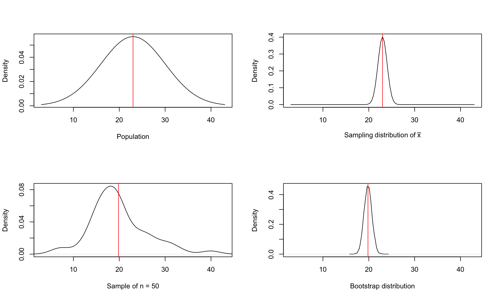
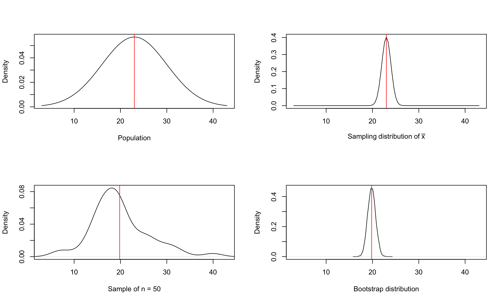
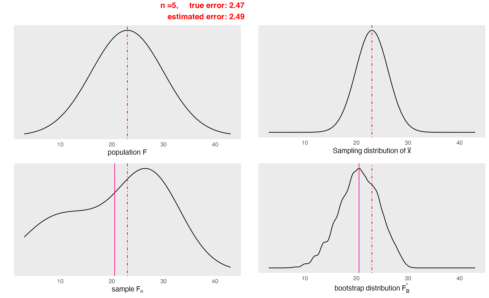

“pulling oneself up by one’s bootstraps”
\[ \widehat \mu = T(F_n) = \frac{1}{n}\sum_{i=1}^nX_i, \]
which is the plug-in estimator of \(\theta\).
\[ X_1^*, X_2^*, \dots, X_n^* \sim F_n \]
\[ \widehat{\theta}_n - \theta \approx \widehat{\theta}^*_n - \widehat{\theta}_n, \]
i.e., the distribution of two random variables \((\widehat{\theta}_n - \theta)\) and \((\widehat{\theta}^*_n - \widehat{\theta}_n)\) are approximately the same. Note that the dsitribution of \(\widehat{\theta}_n\) and \(\widehat{\theta}^*_n\) are not the same. Thus,
\[\begin{aligned} &\text{Bias}_F(\widehat{\theta}_n) &&= \mathbb{E}_F(\widehat{\theta}_n - \theta) \approx \mathbb{E}_{F_n}(\widehat{\theta}^*_n - \widehat{\theta}_n);\\ &\mathbb{V}_F(\widehat{\theta}_n) &&= \mathbb{V}_F(\widehat{\theta}_n - \theta) \approx \mathbb{V}_{F_n}(\widehat{\theta}^*_n - \widehat{\theta}_n) \end{aligned}\]Suppose we have a biased estimate \(\widehat{\theta}_n\):
\[ \mathbb{E}_F(\widehat\theta_n) \ne \theta. \]
\[ |\mathbb{E}_{F_n}(\widehat{\theta}^*_n) - \theta| < |\mathbb{E}_F(\widehat\theta_n) - \theta| \]
Since
\[\begin{aligned} \mathbb{E}_F(\widehat\theta_n) - \theta &\approx \mathbb{E}_{F_n}(\widehat{\theta}^*_n) - \widehat{\theta}_n,\\ (\text{indeterminable bias} &\approx \text{determinable bias using bootstrap} ) \end{aligned}\]Thus,
\[\begin{aligned} &\mathbb{E}_F(\widehat\theta_n) \approx \theta + \text{Bias}_F(\widehat{\theta}_n) &&\Leftrightarrow \theta \approx \mathbb{E}_F(\widehat\theta_n) - \text{Bias}_F(\widehat{\theta}_n) \\ \text{and},\quad &\widehat{\text{Bias}}_F(\widehat{\theta}_n) \approx \mathbb{E}_{F_n}(\widehat{\theta}^*_n) - \widehat{\theta}_n \end{aligned}\]We then have
\[ \theta \approx \mathbb{E}_{F}\big[\widehat{\theta}_n - \widehat{\text{Bias}}_F(\widehat{\theta}_n)\big] = \mathbb{E}_{F}\big[\widehat{\theta}_n - \mathbb{E}_{F_n}(\widehat{\theta}^*_n) + \widehat{\theta}_n\big] \]
Finally,
\[ \theta \approx 2\widehat{\theta}_n - \mathbb{E}_{F_n}(\widehat{\theta}^*_n) \]
\[ Var_B(\widehat{\theta}_n)= \frac{1}{B-1}\sum_{i=1}^{B}(\widehat{\theta}_{n,i}^* - \bar{\theta}^*) \approx Var_{F_n}(\widehat{\theta}^*_{n} ) \]
where
\[ \bar{\theta}^* = \frac{1}{B} \sum_{b=1}^{B}\widehat{\theta}^*_{n,b} \approx \mathbb{E}_{F_n}(\widehat{\theta}_n^*) \]
\[ \mathbb{V}_F(\widehat{\theta}_n) \stackrel{O(1/\sqrt n)}{\approx} \mathbb{V}_{F_n}(\widehat{\theta}_n) \stackrel{O(1/\sqrt B)}{\approx} \mathbb{V}_{B}(\widehat{\theta}_n) \]

[1]
| Mean | Standard deviation | |
|---|---|---|
| population | 23.00 | 7.00 |
| Sample* | 19.83 | 6.20 |
| Sampling distribution \(\bar{X}\) | 23.00 | 0.99 |
| Bootstrap distribution* | 19.83 | 0.86 |

Sometimes, we can perform the bootstrap analytically.
Example: Let \(\theta = T(F) = F^{-1}(0.5)\) based on the sample size \(n = 2m+1\) from an unknown distribution \(F\). Thus, \(\widehat \theta = T(F_n) = F_n^{-1}(0.5) = X_{(m)}\). Suppose \(\boldsymbol{X}^* = (X^*_1,\dots,X^*_n)\) be a bootstrap sample from \(F_n\). Let \(\widehat{\theta}^*_n = X^*_{(m)}\).
Let \(M_j\) be the number of \(X_j\) in \(\boldsymbol{X}^*\). Thus,
\[ \boldsymbol{M} = (M_1,\dots,M_2) \sim Bin_n(n, \boldsymbol{p}), \quad\text{where } \boldsymbol{p} = (1/n,1/n,\dots, 1/n) \]
Since
\[ \{X^*_{(m)}\} > X_{(k)} = \{nF^*_n(X_{(k)}) \le m-1 \}, \]
and
\[\begin{aligned} \mathbb{P}(X^*_{(m)} > X_{(k)}) &= \mathbb{P}(nF^*_n(X_{(k)}) \le m-1) \\ &= \mathbb{P}(Bin(n,k/n) \le m -1), \quad (\textit{how many numbers are less than } x_{(k)})\\ &= \sum_{j=0}^{m-1} {{n}\choose{j}} (k/n)^j(1-k/n)^{n-j} \end{aligned}\]This implies
\[ \mathbb{P}_{F_n}(X^*_{(m)} = X_{(k)}) = \sum_{j=0}^{m-1} {n\choose j} \bigg\{\Big(\frac{k-1}{n}\Big)^j\Big(1-\frac{k-1}{n}\Big)^{n-1} - \Big(\frac{k}{n}\Big)^j\Big(1-\frac{k}{n}\Big)^{n-1} \bigg\}, \]
for \(k = 1,\dots,n\), that is the sampling distribution of \(X^*_{(m)}\) the bootstrap estimator.
\[ b_{jack} = (n-1)(\bar{T}_n - T_n), \]
where \(\bar{T}_n = n^{-1}\sum_iT_{(-i)}\). The biased corrected estimator is
\[ T_{jack} = T_n - b_{jack} \]
We can show that \(Bias(T_{jack}) = O(1/n^2)\).
Note that for many statistics it can be shown that
\[ bias(T_n) = \frac{a}{n} + \frac{b}{n^2} + \text{O}(\frac{1}{n^3}) \]
For example, \(\mathbb{E}(S^2) = \sigma^2 - \sigma^2/n\); thus, \(bias(S^2) = -\sigma^2/n\) (compared this to \(\text{O}(1/n)\)).
Both Jackknife and bootstrap method fail for some functions \(T(F)\) which are not sufficiently smooth.
We consider the following example where the EDF is not a sufficiently accurate estimator of the population (true) distribution for the bootstrap to succeed.
Suppose \(\boldsymbol{X} = (X_1,\dots,X_n) \stackrel{iid}{\sim} U(0,\theta)\). Let the parameter of interest is \(\widehat{\theta}_n = X_{(n)}\). Thus
\[ n(\theta-\widehat{\theta}_n) = n\theta(1 - \frac{X_{(n)}}{\theta}) \stackrel{d}{=} n\theta(1-\xi_{(n)}) \stackrel{d}{\to} \theta Y, \] where \(Y \sim Exp(1)\). So,
\[ \widehat{\theta}_n \sim Exp(1/\theta) \]
Now, let \(\boldsymbol{X}^* = (X^*_1,\dots,X^*_n)\) be iid (bootstrap) sample from \(\widehat{F}_n\). Let \(\widehat{\theta}^*_n = X^*_{(n)}\). Then
\[ \begin{aligned} \mathbb{P}(\widehat{\theta}^*_n = X_{(n)}|\widehat{F}_n) &= 1 - \mathbb{P}(X^*_{(n)}< X_{(n)}|\widehat{F}_n)\\ &= 1 - \mathbb{P}(\text{all } X^*_i < X_{(n)}|\widehat{F}_n)\\ &= 1 - \Big(\frac{n-1}{n}\Big)^n\\ &=1 - \Big(1 - 1/n\Big)^n \to 1 - e^1 \approx 0.62 \end{aligned} \]
Suppose \(\widehat{SE}_B = \sqrt{Var_B(\widehat{\theta})}\). Under this method a 100(1 − α)% bootstrap confidence interval for \(\theta\) is given by
\[ \widehat{\theta} \pm Z_{1-\frac{\alpha}{2}} \widehat{SE}_B \] where \(Z_{1-\frac{\alpha}{2}} = \Phi^{-1} (1 − \alpha/2)\), with \(\Phi(.)\) the standard Gaussian CDF.
In practice \(\widehat{SE}_B = \sqrt{Var_B(\widehat{\theta})}\) is estimated using a bootstrap estimator of the standard error of \(\widehat{\theta}\), which is \(\sqrt{Var_B(\widehat{\theta^*})}\) (shown earlier).
Standard Normal Bootstrap Confidence Interval (95%): [ 18.13688 , 21.52038 ]Percentile Bootstrap Confidence Interval (95%): [ 18.17509 , 21.55788 ]\[ H(q) = P_F (Q(X) ≤ q) \]
The interval is defined as:
\[ (\widehat{\theta}({\mathbf{X}})-H^{-1}(1-\frac{\alpha}{2}),\widehat{\theta}({\mathbf{X}})-H^{-1}(\frac{\alpha}{2})) \]
It is easy to see that this interval has a confidence level \(1 − \alpha\).
However, \(H(·)\) is unknown \(\rightarrow\) bootstrap estimator:
\[ \widehat{H}_{b}^* (q) = \frac{1}{B}\sum_{b=1}^{B}\mathbb{I}(Q_{b}^*\leq q) \]
where \(Q_{b}^* = \widehat{\theta}_{b}^* - \widehat{\theta}^*\).
Set
\[\begin{align} \widehat{a} &= \widehat{\theta} - \widehat{H^*}^{-1} (1-\frac{\alpha}{2}) \\&= \widehat{\theta} - q_{1-\frac{\alpha}{2}}^* \\&= 2\widehat{\theta} - \widehat{\theta}_{1-\frac{\alpha}{2}}^* \end{align}\]
Then
\[\begin{align} \widehat{b} &= \widehat{\theta} - \widehat{H^*}^{-1} (\frac{\alpha}{2}) \\&= \widehat{\theta} - q_{\frac{\alpha}{2}}^* \\&= 2\widehat{\theta} - \widehat{\theta}_{\frac{\alpha}{2}}^* \end{align}\]
The approximate 100(1 − α)% confidence interval for \(\theta\) is
\[ (2\widehat{\theta} - \widehat{\theta}_{1-\frac{\alpha}{2}}^*,2\widehat{\theta} - \widehat{\theta}_{\frac{\alpha}{2}}^*) \] It can be shown that
\[ P(2\widehat{\theta} - \widehat{\theta}_{1-\frac{\alpha}{2}}^*\leq\theta \leq 2\widehat{\theta} - \widehat{\theta}_{\frac{\alpha}{2}}^*) \longrightarrow 1 - \alpha \hspace{0.3cm} \textrm{ as } n \rightarrow \infty \]
Pivotal Bootstrap Confidence Interval (95%): [ 18.036 , 21.48137 ]\[ [\widehat{\theta}^\star_{\alpha_1B}, \widehat{\theta}^\star_{\alpha_2B}] \]
where
\[ \alpha_1 = \Phi \biggl(\widehat{z}_0 +\frac{\widehat{z}_0+z_{\alpha/2}}{1-\widehat{a}(\widehat{z}_0+z_{\alpha/2})}\biggr) \]
and \[ \alpha_2 = \Phi \biggl(\widehat{z}_0 +\frac{\widehat{z}_0+z_{1-\alpha/2}}{1-\widehat{a}(\widehat{z}_0+z_{1-\alpha/2})}\biggr) \]
with \(z_\alpha = \Phi^{-1}(\alpha)\) and \(\widehat{a}\) bias correction and the acceleration adjustment estimators, respectively.
\[ \widehat{z}_0 = \Phi^{-1} \biggl(\frac{1}{b}\sum_{b=1}^{B}\mathbb{I}(\widehat{\theta}^*\leq\widehat{\theta})\biggr) \]
\(\widehat{z}_0 = 0\) if \(\widehat{\theta}^*\) is the median of the bootstrap replicates.
\[ \widehat{a} = \frac{\sum_{i=1}^{n}(\overline{\widehat{\theta}_{(.)}}-\widehat{\theta}_{(i)})^3}{6[\sum_{i=1}^{n}(\overline{\widehat{\theta}_{(.)}}-\widehat{\theta}_{(i)})^2]^{3/2}} \]
where here \(\widehat{\theta}_{(i)}\) denotes the i-th jackknife estimate, and \(\overline{\widehat{\theta}_{(.)}}\) is the arithmetic mean of all jackknife estimates.
Bias Corrected and accelerated (BCa) CI (95%): [ 16.53901 , 23.40597 ]The following bootstrap CIs are generated from a rnorm(50,23,7) dataset resampled 10,000 times.
| type | lower bound | upper bound | interval width |
|---|---|---|---|
| sample t-CI (benchmark) | 18.068 | 21.589 | 3.521 |
| std normal | 18.137 | 21.520 | 3.384 |
| percentile | 18.175 | 21.558 | 3.383 |
| pivotal | 18.036 | 21.481 | 3.445 |
| BCa | 16.539 | 23.406 | 6.867 |
Let \(\widehat{\theta}_n := \widehat{\theta}(X)\). Then
\[ Z_n = \frac{\widehat{\theta}_n-\theta}{\widehat{SE}_B}; \quad Z^*_{n,b} = \frac{\widehat{\theta}_n^*-\widehat\theta_n}{\widehat{se}_b^*}, \]
where \(\widehat{se}_b^*\) is an estimate of the SE of \(\widehat{\theta}^*_b\) not \(\widehat{\theta}_n\).
Thus, sample quantiles of the bootstrap quantities \(Z^*_{n,1},\dots,Z^*_{n,B}\) should approximately the true quantiles of the distribution of \(Z_n\). Let \(Z^*_{\alpha}\) denote the \(\alpha\) sample quantiles of \(Z^*_{n,1},\dots, Z^*_{n,B}\), then \(\mathbb{P}(Z_n \le Z^*_{\alpha}) \approx \alpha\). Let
\[ C_n(\boldsymbol{X}) = (\widehat{\theta}_n - Z^*_{1-\alpha/2}\widehat{SE}_B,\widehat{\theta}_n + Z^*_{1-\alpha/2}\widehat{SE}_B ) \]
Then,
\[\begin{aligned} \mathbb{P}(\theta \in C_n(\boldsymbol{X})) &= \mathbb{P}(\widehat{\theta}_n - Z^*_{1-1/\alpha}\widehat{SE}_B \le \theta \le \widehat{\theta}_n + Z^*_{1-1/\alpha}\widehat{SE}_B)\\ &= \mathbb{P}(Z^*_{\alpha/2} \le \frac{\widehat{\theta}_n - \theta}{\widehat{SE}_B} \le Z^*_{1-\alpha/2}) \\ &= \mathbb{P}(Z^*_{\alpha/2} \le Z_n \le Z^*_{1-\alpha/2}) \\ &= 1 - \alpha \end{aligned}\]Assume the following linear regression model, \(Y=X\beta+\varepsilon\), where \(Y\) is the response variable, \(X\) is the corresponding covariate and \(\varepsilon\) is the residuals.
Uniformly generate news sets of observations from orginal sample \((X_1,Y_1),\dots,(X_n,Y_n)\) with replacement,
\[ (X_1^*,Y_1^*),\dots,(X_n^*,Y_n^*). \]
Repeat the process \(B\) times, we would have totally \(B\) bootstrap samples. Using each bootstrap sample to fit one linear regression model, this leads to
\[ (\widehat{\beta_1^*},\dots,\widehat{\beta_n^*}), \] where \(\widehat{\beta_i^*}\) is the estimated coefficients using \(i\)th bootstrap sample, \(\forall i = 1,\dots,n\).
Then we can estimate the confidence interval for \(\beta\) ([5]).
Although paired bootstrap works well in theory, it can lead to a bad estimation when there are outliers in the datasets. To resolve this problem, residual bootstrap is introduced.
Firstly, generate \(e_i\) from the original sample \((X_1,Y_1),\dots,(X_n,Y_n)\) with
\[ e_i=Y_i-\widehat{Y_i}, \forall i=1,\dots,n. \]
Next, we generate \(\widehat{\varepsilon}_1^*,\dots,\widehat{\varepsilon}_n^*\)
\[ P(\widehat{\varepsilon}_j^* = e_i)={1\over n}, \forall j =1,\dots,n, \forall i =1,\dots,n \]
Then, we generate a new bootstrap sample \((X_1^*,Y_1^*),\dots,(X_n^*,Y_n^*)\) via
\[ X_j^*=X_i, Y_j^*=\widehat{Y_i}+\widehat{\varepsilon}_j^*,\forall j =1,\dots,n, \forall i =1,\dots,n. \]
Repeat the process \(B\) times, and construction of Confidence interval would be the same as Paired bootstrap ([5]).
Residual bootstrap does not work well when homoscedastic does not hold in our model, which means \(\text{Var}(\varepsilon_i|X_i)\) depends on \(X_i\). When implement residual bootstrap, it swaps the residuals regardless of the value of \(X_i\). To resolve this problem, wild bootstrap is introduced.
Firstly, generate \(e_i\) from the original sample \((X_1,Y_1),\dots,(X_n,Y_n)\) with
\[ e_i=Y_i-\widehat{Y_i}, \forall i=1,\dots,n. \]
Next, we generate \(\widehat{\varepsilon}_1^*,\dots,\widehat{\varepsilon}_n^*\)
\[ P(\widehat{\varepsilon}_j^* = e_i)={1\over n}, \forall j =1,\dots,n, \forall i =1,\dots,n \]
Then, we generate a new bootstrap sample \((X_1^*,Y_1^*),\dots,(X_n^*,Y_n^*)\) via
\[ X_j^*=X_i, Y_j^*=\widehat{Y_i}+V_j \times \widehat{\varepsilon}_j^*,\forall j =1,\dots,n, \forall i =1,\dots,n, \] where \(V_j \sim N(0,1)\) (note that \(V_j\) can follow non-Gaussian distribution).
Repeat the process \(B\) times, and construction of Confidence interval would be the same as Paired bootstrap([6]).
For simulation, we generate a dataset \(D_1\) with size of 50 with
\[ Y=\beta_0+X\beta_1+\varepsilon, \]
where we only consider one covariate in this non-intercept model, and \(X \sim N(0,1)\), \(\beta=5\), \(\varepsilon \sim N(0,1)\).
The dataset \(D_1\) will be used for paired bootsrtap and residual bootstrap.
In order to include heteroskedasticity, we generate a dataset \(D_2\) with size of 50 with
\[ Y=\beta_0+X\beta_1+X\varepsilon, \]
where we only consider one covariate in this non-intercept model, and \(X \sim N(0,1)\), \(\beta=5\), \(\varepsilon \sim N(0,1)\).
The dataset \(D_2\) will be used for wild bootstrap.
The number of bootstrap sample will be set to 10,000.
We obtained 95% confidence interval for \(\beta\) in simple linear regression model as the benchmark to compare with the result in paired bootstrap, residual bootstrap, and wild bootstrap.
| Bootstrap method | Lower | Upper | Length of CI |
|---|---|---|---|
| Paired Bootstrap | 4.94 | 5.39 | 0.45 |
| Residual Bootstrap | 4.92 | 5.38 | 0.46 |
| Benchmark | 4.91 | 5.39 | 0.48 |
| Wild Bootstrap | 4.65 | 5.42 | 0.77 |
| Benchmark | 4.81 | 5.26 | 0.44 |